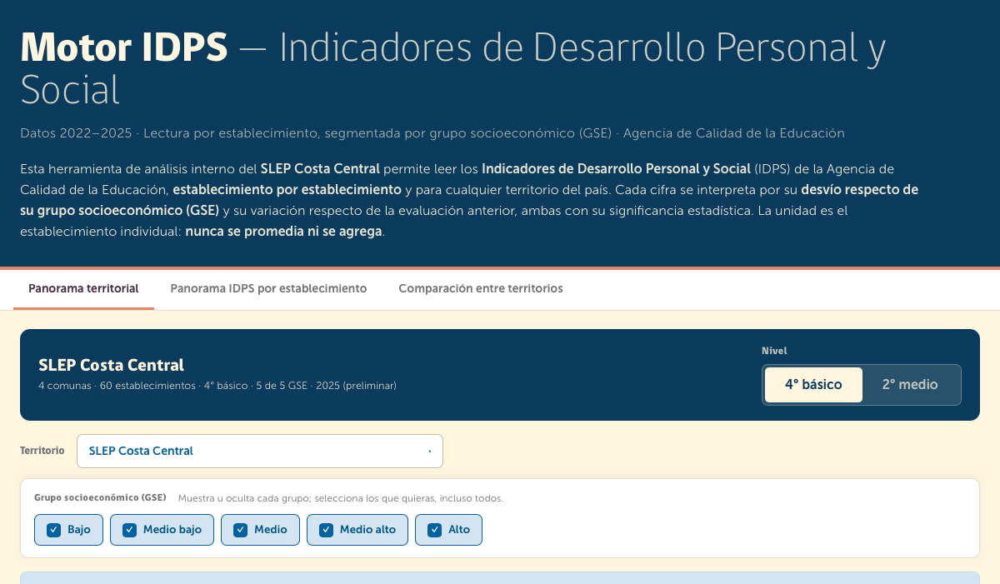
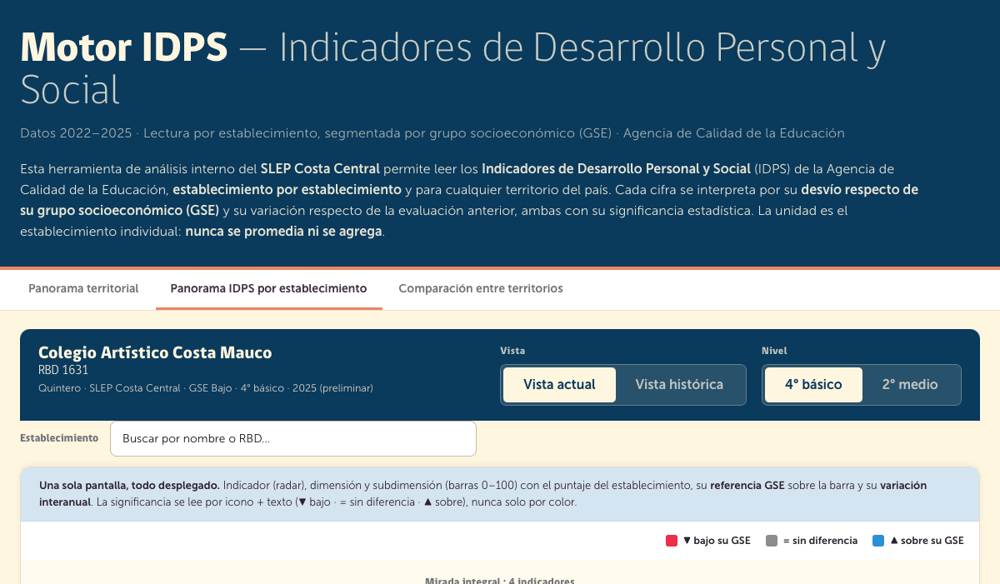
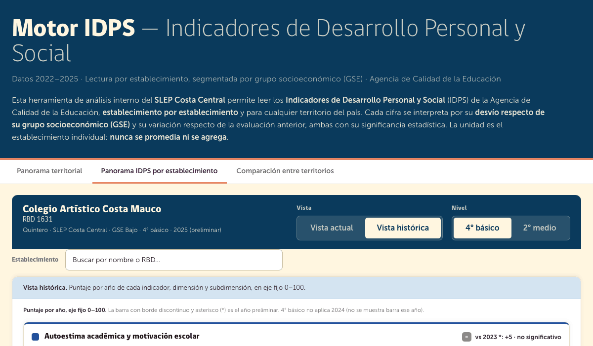
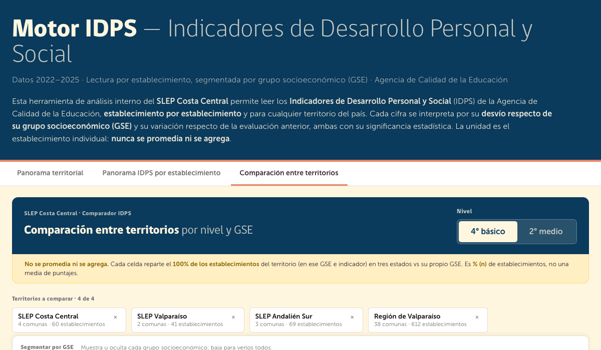

SLEP Costa Central · Unidad de Monitoreo y Seguimiento
Motor IDPS
Handout de diseño y traspaso
Herramienta interna de lectura de los Indicadores de Desarrollo Personal y Social (IDPS) de la Agencia de Calidad de la Educación, establecimiento por establecimiento y segmentada por grupo socioeconómico (GSE).
01 · Qué es
Una sola idea rectora
Cada cifra IDPS se interpreta por dos desvíos, no por su valor absoluto: cuánto se aparta el establecimiento de su grupo socioeconómico (GSE), y cuánto cambió respecto de la evaluación anterior. Ambos desvíos llevan siempre su significancia estadística. La unidad es el establecimiento individual: el motor no promedia ni agrega resultados de territorios.
Por qué importa. Un puntaje de 72/100 no dice nada por sí solo. Lo que orienta la gestión es si ese 72 está bajo, igual o sobre lo esperado para su GSE, y si subió o bajó de forma significativa desde la última medición. Todo el diseño existe para responder esas dos preguntas de un vistazo.
02 · Las tres pantallas
Cómo se recorre
El motor se navega por tres pestañas. Todas comparten la misma leyenda y la misma gramática de lectura (icono + texto, nunca color solo).

PANTALLA 1
Panorama territorial
Punto de entrada. El territorio (SLEP, comuna, región o país) acota la lista de establecimientos; no produce puntaje propio. Por cada GSE se muestra cómo se reparten sus establecimientos por estado vs su GSE, y una grilla de tarjetas con mini-radar para abrir cada uno.
- Selector de Territorio y de Nivel (4° básico / 2° medio).
- Filtro GSE siempre visible: muestra u oculta cada grupo.
- Cada tarjeta lleva el puntaje y el desvío vs GSE de los 4 indicadores.

PANTALLA 2 · VISTA ACTUAL
Panorama IDPS por establecimiento
Toda la lectura de un establecimiento en una sola pantalla, desplegada: radar de los 4 indicadores, y para cada uno sus dimensiones y subdimensiones en barras 0–100 con la referencia GSE marcada sobre la barra y la variación interanual al lado.
- Buscador de establecimiento (por nombre o RBD) para cambiar sin volver atrás.
- Toggle Vista actual / Vista histórica y selector de Nivel.
- Las dimensiones/subdimensiones usan barras (no radar): son 2–3 variables.

PANTALLA 2 · VISTA HISTÓRICA
Evolución por año
El mismo establecimiento, puntaje por año en eje fijo 0–100, para indicador, dimensión y subdimensión. Cada nivel muestra la diferencia vs el año anterior con su significancia ("▲ vs 2023: +5 · significativo"), con la misma sintaxis del resto.
- El año preliminar (2025) va con barra de borde discontinuo y asterisco (*).
- 4° básico no aplica 2024: el hueco no se interpola, se omite la barra.

PANTALLA 3
Comparación entre territorios
Hasta 4 territorios lado a lado, por GSE e indicador. Cada celda reparte el 100% de los establecimientos de ese territorio en tres estados vs su propio GSE — es % (n) de establecimientos, no una media de puntajes.
- Chips de territorios (máx. 4) y selector de Nivel.
- Segmentador GSE horizontal: una sección de tabla por grupo.
03 · Marco conceptual
4 indicadores · 11 dimensiones
Los IDPS son índices de la Agencia de Calidad que miden el desarrollo personal y social de las y los estudiantes, complementando el SIMCE. Se miden por cuestionarios tipo Likert (estudiantes, docentes, apoderados), escala 0–100 (100 = percepciones más positivas), e insumo de la Categoría de Desempeño.
1 Autoestima académica y motivación escolar
Autopercepción del estudiante sobre su capacidad de aprender y sus actitudes hacia el estudio.
Autopercepción y autovaloración
Motivación escolar
2 Clima de convivencia escolar
Percepción de un ambiente de respeto, organizado y seguro.
Ambiente de respeto
Ambiente organizado
Ambiente seguro
3 Participación y formación ciudadana
Actitudes frente al establecimiento y fomento de la vida democrática.
Participación
Vida democrática
Sentido de pertenencia
4 Hábitos de vida saludable
Actitudes y conductas autodeclaradas sobre vida saludable y su promoción.
Hábitos alimenticios
Hábitos de vida activa
Hábitos de autocuidado
Regla de oro de contenido. El producto no sirve si el usuario no entiende qué mide cada indicador. Las definiciones viven en la interfaz: intro del header, tarjetas del radar (definición + "los que puntúan alto…"), y de forma contextual. Cada indicador y dimensión debe quedar definido y accesible.
04 · Gramática de lectura
Convenciones que no se rompen
▼ Bajo su GSE
El establecimiento puntúa significativamente bajo lo esperado para su grupo socioeconómico.
= Sin diferencia
No hay diferencia estadísticamente significativa con su GSE (o con el año anterior).
▲ Sobre su GSE
Puntúa significativamente sobre lo esperado para su grupo socioeconómico.
Significancia explícita
Toda diferencia se acompaña de "significativo" o "no significativo" por texto. Nunca se comunica solo por color.
GSE inviolable
El filtro de grupo socioeconómico está siempre presente y nunca colapsa. Toda lectura está segmentada por GSE.
Sin dato ≠ cero
Datos suprimidos por resguardo estadístico se marcan "sin dato". Jamás se dibuja un cero ni se interpola un hueco.
Preliminar marcado
2025 es preliminar: asterisco (*) y barra de borde discontinuo en todas las visualizaciones.
No se agrega
Los territorios acotan la lista; nunca se promedian sus establecimientos en un puntaje único. La comparación es distribución % (n).
05 · Sistema visual
Paleta y tipografía
Colores de los 4 indicadores (Agencia de Calidad)
Estado vs GSE (sin semáforo)
Marco institucional (heredado del motor hermano)
Ocean / Costa Central#0062A0
Tipografía
gobCL Heavy — titulares
Museo Sans — cuerpo y UI (pesos 300 / 500 / 700). Fallback a system-ui si no cargan.
Antitropos. Sin semáforo rojo/verde como único canal. Sin gradientes decorativos. Sin sombras pesadas. Radios pequeños (2–12px). Mucho aire. Sin "data slop": cada cifra debe ganarse su lugar. Sin ALL CAPS salvo siglas (IDPS, GSE, SLEP, RBD).
06 · Modelo de datos
Cómo está construido
El prototipo usa datos ilustrativos deterministas (un hash genera cifras 0–100 estables por clave). No hay pipeline real. La jerarquía es indicador → dimensión → subdimensión, y cada nodo produce el mismo objeto de lectura ("ancla"):
- v — puntaje 0–100.
- gd / gs — desvío vs GSE y si es significativo; gseRef = puntaje de referencia del GSE.
- yd / ys — variación interanual y su significancia.
- noData — supresión por resguardo (→ "sin dato").
- estado — bajo / neutro / sobre, derivado de gd + gs.
Cobertura temporal real (asimétrica)
- 2° medio: 2022–2025 (única serie larga).
- 4° básico: 2022, 2023, 2025 (falta 2024 → hueco, no se interpola).
- Cuando un grado tiene un solo año, la Vista histórica se deshabilita. 2025 siempre es preliminar.
Archivos del prototipo
| Archivo | Rol |
|---|
Propuesta IDPS.html | Shell: chrome institucional, todo el CSS (tokens + componentes), contenedores de las 3 pantallas y carga del script. |
idps-demo.js | Toda la lógica: marco conceptual (IND→dim→sub), generador determinista, radar SVG, barras 0–100, stacked 100%, las 3 pantallas y el enrutado por eventos. |
fonts/ | gobCL (Heavy/Regular/Light) y Museo Sans (300/500/700). |
Nota de implementación. El prototipo de la propuesta es vanilla JS + SVG (un solo script, render por innerHTML). El motor de producción hermano usa React + D3; el traspaso a producción puede portar estas pantallas a ese stack manteniendo las convenciones de este documento.
07 · Decisiones cerradas
Lo que ya está resuelto
- Radar solo para los 4 indicadores; dimensiones y subdimensiones van en barras 0–100 (2–3 variables no se leen bien en radar).
- Referencia GSE marcada sobre la barra ("GSE n puntos"), no como segunda barra.
- Comparación entre territorios = distribución % (n) de establecimientos por estado, nunca media de puntajes.
- Selectores homogéneos entre pantallas: banner primero, picker (Territorio/Establecimiento) debajo, y Nivel/Vista en el banner con el mismo componente y tamaño.
- RBD en línea aparte, sin negrita y sin paréntesis, bajo el nombre del establecimiento.
- Leyenda idéntica en las 3 pantallas, alineada a la columna de contenido.
- Vista histórica muestra la diferencia entre años con su significancia en indicador, dimensión y subdimensión.
Posibles próximos pasos (no comprometidos)
- Drill-down de comuna → establecimientos dentro del comparador.
- Exportar gráficos / tabla a imagen o CSV.
- Portar las 3 pantallas al stack React + D3 del motor hermano.
- Conectar el pipeline de datos reales (hoy todo es ilustrativo).